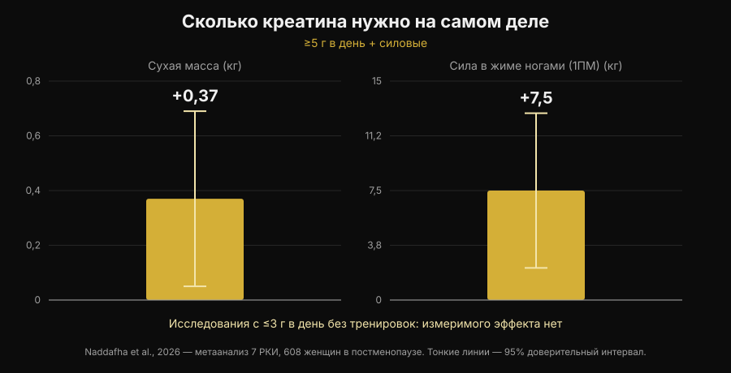
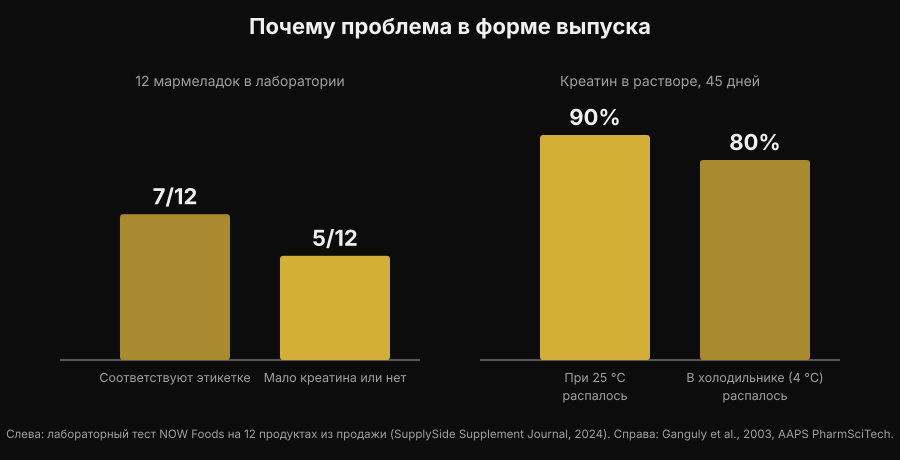

Жевательный креатин: работает как порошок?
Разжевать две мармеладки вместо того, чтобы размешивать порошок, который всё равно останется на дне стакана: обещание удобное, и запросы "creatine gummies" выросли на 279%. Но настоящий вопрос не в том, работает ли креатин — здесь литература закрыта тридцать лет назад, — а в том, есть ли внутри этих мармеладок тот креатин, который написан на этикетке. По этому пункту цифры есть, и они не успокаивают.

Коротко
- Исследование по мармеладкам существует, и оно положительное. Десять недель, 5 г в день креатина моногидрата в форме мармеладки: у 32 спортсменок по пляжному волейболу вертикальный прыжок и смена направления улучшились по сравнению с контролем.
- Но в этом исследовании были настоящие 5 г. Самый свежий метаанализ показывает +0,37 кг сухой массы и +7,5 кг в жиме ногами при ≥5 г в день вместе с силовыми, и никакого измеримого эффекта в исследованиях с ≤3 г в день без тренировок.
- Многие мармеладки не содержат того, что заявлено. В лабораторной проверке 12 продуктов из продажи в 5 креатина было мало или не было совсем — и во всех пяти нашли креатинин.
- Креатинин не опасен, он бесполезен. Это продукт распада креатина: если он в банке, значит креатин ушёл ещё до того, как ты её купил.
- Химия объясняет причину. Сухой креатин в порошке стабилен, в растворе — нет. В воде при комнатной температуре 90% распадается за 45 дней.
Почему мармеладки сейчас везде
Причина не научная, а бытовая. У порошкового креатина три практических минуса: его надо отмерять, надо растворять, а в холодной воде он остаётся крупинками на дне. Мармеладка снимает все три проблемы сразу, кладётся в сумку и выглядит как конфета, а не как добавка. Тот же механизм раньше увёл витамин D и омега-3 в жевательный формат.
Результат виден в поиске: "creatine gummies" — это сегодня примерно 165 000 запросов в месяц и рост на 279%, а первые места в Google почти целиком заняты подборками сайтов, которые продают этот продукт. Почти ни на одной из этих страниц нет двух цифр, которые решают дело: сколько креатина нужно и сколько его реально внутри.
Хорошая новость: исследование по мармеладкам есть
Ещё недавно на вопрос "работает ли?" отвечали по аналогии: внутри креатин моногидрат, креатин моногидрат работает, значит работает и это. Теперь есть исследование, которое проверило именно такой формат.
Тридцать две спортсменки по пляжному волейболу, студентки и профессионалки, десять недель получали либо креатин моногидрат в мармеладках по 5 г в день, либо попадали в контрольную группу. Группа креатина улучшила прыжок с контрдвижением (p < 0,001) и скорость смены направления (p = 0,009), тогда как контроль не улучшился или ухудшился; появились благоприятные различия и по жировой массе и проценту жира. Разницы не было по сухой массе, скелетной мышечной массе и времени реакции (Pereira et al., 2026).
Результат согласуется со всей литературой по порошковому креатину и говорит простую вещь: мармеладка не портит молекулу. Если креатин есть и его достаточно, носитель — не проблема. А значит, всё сводится к двум условиям: есть ли он там, и хватает ли его.
Доза решает всё
Цифра, которую нужно запомнить, — 5 г в день. Это поддерживающая доза из официальной позиции International Society of Sports Nutrition, и именно её использовали в исследовании по мармеладкам. Фаза загрузки (около 0,3 г на кг веса в день в течение 5-7 дней) наполняет депо быстрее, но она не обязательна: к той же точке приходишь и на 3-5 г в день за несколько недель (Kreider et al., 2017).
Ниже этого порога картина меняется. Систематический обзор с метаанализом по семи рандомизированным исследованиям и 608 женщинам в постменопаузе нашёл отчётливую пользу, когда креатина было больше 5 г в день и он сочетался с силовой тренировкой: сухая масса +0,37 кг (95% ДИ от +0,05 до +0,69) и жим ногами +7,5 кг (95% ДИ от +2,2 до +12,8). В исследованиях с ≤3 г в день без тренировок — никакого измеримого эффекта (Naddafha et al., 2026).

Тот же порядок величин повторяется в тройном слепом исследовании на двадцати взрослых на веганском питании: четыре недели по 0,1 г на кг в день — около 7 г для человека весом 70 кг — увеличили скелетную мышечную массу на 0,3 кг и улучшили прыжок, без изменений почечных маркеров (López-Moreno et al., 2026).
Теперь практический расчёт — именно из-за него на мармеладки стоит смотреть внимательно. Вот сколько мармеладок в день нужно, чтобы выйти на 5 г, в зависимости от того, сколько заявлено на одну:
| Заявлено креатина на мармеладку | Мармеладок в день для 5 г |
|---|---|
| 0,5 г | 10 |
| 0,75 г | 7 |
| 1 г | 5 |
| 1,25 г | 4 |
| 1,5 г | 4 (3,3 с округлением) |
| 2 г | 3 (2,5 с округлением) |
Расчёт Nurvan: 5 ÷ заявленные граммы на мармеладку, с округлением вверх. Граммы на мармеладку нужно читать на этикетке того продукта, который у тебя в руках.
Дело не в самой цифре, а в том, что порция, указанная на лицевой стороне упаковки, почти никогда не даёт 5 г. Если продукт предлагает "2 мармеладки в день" и каждая заявляет 1 г, ты получаешь 2 г — тот самый диапазон, который в метаанализе не дал измеримых эффектов.
Главная проблема: что внутри на самом деле
Здесь начинается часть, которую партнёрские подборки не рассказывают. Промышленная лаборатория купила 12 креатиновых мармеладок на Amazon и на сайтах производителей и проанализировала их. Семь продуктов соответствовали заявленному на этикетке, местами с большим запасом. Остальные пять содержали мало креатина или не содержали его вовсе. И во всех пяти нашли креатинин, в количествах от небольших до значимых (тест NOW Foods, о котором сообщил SupplySide Supplement Journal, 2024).

Креатинин — конечный продукт распада креатина. Это не яд: твой организм каждый день его образует и выводит, — но никакой эргогенной активности у него нет. Если он нашёлся в добавке, это значит одно: тот креатин распался раньше, чем попал тебе в рот, и ты платишь за конфету.
Почему именно мармеладки? По химической причине, а не коммерческой. Сухой креатин моногидрат в порошке очень стабилен, в растворе — нет. В исследовании стабильности формы креатина растворяли в воде при pH 6,2 и измеряли содержание 45 дней: при комнатной температуре распалось 90% креатина, в холодильнике — 80% (Ganguly et al., 2003). Мармеладка — это гель, который рождается горячим, содержит воду и часто подкисляется для вкуса, а потом месяцами стоит на полке при комнатной температуре: ровно те условия, которые ускоряют превращение. Это не значит, что все мармеладки бесполезны — семь из двенадцати были в порядке, — но формат по своей природе более хрупкий, чем банка порошка, и без лабораторного анализа ты никак не узнаешь, в какую половину попал.
Что на самом деле говорят исследования
| Распространённое утверждение | Вердикт | Источник |
|---|---|---|
| "Мармеладки не работают, креатин в них портится" | Требует уточнения: в одном исследовании сработали | Pereira et al., 2026 |
| "Достаточно принимать столько, сколько сказано на этикетке" | Опровергнуто: важно выйти на 5 г | Naddafha et al., 2026; Kreider et al., 2017 |
| "Если написано креатин, значит креатин внутри есть" | Опровергнуто: в 5 продуктах из 12 его мало или нет | Тест NOW Foods, 2024 |
| "Креатинин в мармеладках вредит почкам" | Опровергнуто: он инертен, проблема в недостающей дозе | Kreider et al., 2017; López-Moreno et al., 2026 |
| "Фаза загрузки обязательна" | Требует уточнения: она ускоряет, но не обязательна | Kreider et al., 2017 |
| "Более растворимые формы эффективнее" | У людей не доказано | Alraddadi et al., 2018 |
На последней строке стоит задержаться, потому что это аргумент, который сопровождает почти все альтернативные формы. Да, креатин гидрохлорид растворимее моногидрата, и фармакокинетическое исследование на крысах с моделированием оценило пероральную биодоступность гидрохлоридной формы выше, чем у моногидрата (Alraddadi et al., 2018). Но это модель на животных: ни одно исследование на людях не показало, что из этого получается больше силы или больше массы, а моногидрат остаётся формой, на которой держится практически вся литература, включая данные о долгосрочной безопасности (Kerksick et al., 2026). Для мармеладки действует тот же принцип: это носитель, а не преимущество.
Как применить
- Считай граммы, а не конфеты. Посмотри, сколько граммов креатина моногидрата заявлено на одну мармеладку, и посчитай, сколько нужно до 5 г в день. Если упаковка указывает это не на штуку, а только на "порцию", это уже сигнал.
- Насторожись, если не написано "моногидрат". Это та форма, которую использовали в исследованиях, включая исследование с мармеладками. Общие формулировки и "запатентованные" формы такой доказательной базы не имеют.
- Ищи сертификацию независимой стороны. Informed Sport, NSF Certified for Sport и аналоги проверяют партии в лаборатории. Для мармеладок это важнее, чем для порошка, именно потому что формат менее стабилен.
- Посчитай цену за грамм. Раздели цену на общее количество граммов креатина в упаковке, а не на число мармеладок. Сравнение с банкой порошка обычно на этом и заканчивается.
- Смотри и на сахар. Пять мармеладок в день — это пять конфет в день: проверь строку сахаров в составе и внеси их в дневной расчёт.
- Время приёма важно меньше, чем регулярность. Депо наполняет ежедневный приём, а не попадание в нужное окно: подробно я разобрал это в статье о том, когда принимать добавки.
Попробовать Nurvan — добавки в одном месте с рабочими весами
В Nurvan ты записываешь, что принимаешь и когда, в разделе добавок, и видишь это рядом с историей рабочих весов, повторений и RIR по твоим тренировкам. Так, если ты меняешь формат или марку креатина, можно посмотреть, что произошло с цифрами в зале в следующие недели, вместо того чтобы доверять ощущению. В том же профиле лежат и загруженные тобой анализы.
Частые вопросы
Жевательный креатин действительно работает?
Он может работать при двух условиях. В доступном исследовании десять недель по 5 г в день в форме мармеладки улучшили вертикальный прыжок и смену направления у спортсменок по пляжному волейболу (Pereira et al., 2026). Условия такие: продукт действительно содержит заявленный креатин, и ты выходишь примерно на 5 г в день.
Сколько жевательного креатина нужно в день?
Зависит от того, сколько граммов заявлено на одну штуку: цель — около 5 г креатина моногидрата в день. При 1 г на мармеладку это 5 штук, при 0,5 г — 10. "Рекомендуемая порция" на упаковке часто остаётся ниже 5 г.
Креатинин, найденный в некоторых мармеладках, опасен?
Нет. Креатинин — продукт распада креатина, организм образует и выводит его в обычном режиме; в исследованиях креатин не менял почечные маркеры (Kreider et al., 2017; López-Moreno et al., 2026). Проблема не в токсичности, а в эффективности: где есть креатинин, там не хватает креатина. Если у тебя показатели анализов вне нормы или известное заболевание почек, стоит обсудить это с врачом, а не выбирать добавку самостоятельно.
Что лучше: мармеладки или порошок?
По самой молекуле доказанной разницы нет. У порошка три конкретных плюса: он долго стабилен, стоит намного меньше за грамм и позволяет отмерить ровно 5 г. Мармеладка выигрывает только в удобстве. Как креатин и другие добавки располагаются по соотношению доказательств и цены, я разобрал в тир-листе добавок для силы.
Читайте также
- Тир-лист добавок для силы: что говорят исследования — где стоит креатин относительно всего остального, с доказательствами на руках.
- Выпадают ли волосы от креатина? — второй самый частый вопрос о креатине и исследование, из которого вырос этот страх.
- Когда принимать добавки: важно ли время? — почему регулярность весит больше, чем момент приёма.
Источники
- Pereira F, Forbes SC, Romano V, Christopher P, Santana JC, Antonio J, 2026. Effects of Creatine Monohydrate Gummies on Performance and Body Composition in Female Beach Volleyball Athletes. Journal of Functional Morphology and Kinesiology 11(1):105. PMID 41900512. DOI
- Naddafha S, Antonio J, Kreider RB, Stout JR, 2026. Creatine monohydrate for lean mass, strength, and bone density in postmenopausal women: a systematic review and meta-analysis. Journal of the International Society of Sports Nutrition 23(1):2668435. PMID 42141930. DOI
- Kreider RB, Kalman DS, Antonio J, Ziegenfuss TN, Wildman R, Collins R, Candow DG, Kleiner SM, Almada AL, Lopez HL, 2017. International Society of Sports Nutrition position stand: safety and efficacy of creatine supplementation in exercise, sport, and medicine. Journal of the International Society of Sports Nutrition 14:18. PMID 28615996. DOI
- Kerksick C, Gonzalez D, Stout J, Forbes S, Candow D, Ziegenfuss T, Marshall R, Schwesig R, Kreider R, 2026. The emerging and evolving evidence supporting creatine as an ergogenic aid: history and applications. Journal of the International Society of Sports Nutrition 23(1):2646627. PMID 41870601. DOI
- López-Moreno M, Muñoz A, Aguilar-Navarro M, Gutiérrez-Hellín J, Franco-Andrés A, López-López P, Crespo-Cañizares A, Marrero-Fernández P, Forbes SC, 2026. Does creatine supplementation improve strength and power in physically active individuals on a vegan diet? A randomized, triple-blind, placebo-controlled trial. European Journal of Applied Physiology 126(10):5521-5532. PMID 42390589. DOI
- Ganguly S, Jayappa S, Dash AK, 2003. Evaluation of the stability of creatine in solution prepared from effervescent creatine formulations. AAPS PharmSciTech 4(2):E25. PMID 12916907. DOI
- Alraddadi EA, Lillico R, Vennerstrom JL, Lakowski TM, Miller DW, 2018. Absolute Oral Bioavailability of Creatine Monohydrate in Rats: Debunking a Myth. Pharmaceutics 10(1):31. PMID 29518030. DOI
Библиографические ссылки получены через PubMed. Лабораторные данные по 12 мармеладкам: тест NOW Foods, о котором сообщил SupplySide Supplement Journal, 2024 — статья. Тема выбрана по трендовому поиску от 5 ноября 2026 года: "creatine gummies" входит в число самых быстрорастущих запросов в сегменте добавок, а страницы, которые его занимают, почти все принадлежат тем, кто продаёт этот продукт.
Giammaria Loi — основатель Nurvan. Тренируется с весами с 2012 года, работает персональным тренером и коучем с сертификацией FIPE с 2013 года и выступает в пауэрлифтинге на национальном уровне с 2018 года. Каждая статья под его именем начинается с научных исследований и заканчивается тем, что действительно работает в зале.
Примечание: материал носит информационный характер и не заменяет консультацию врача или специалиста.